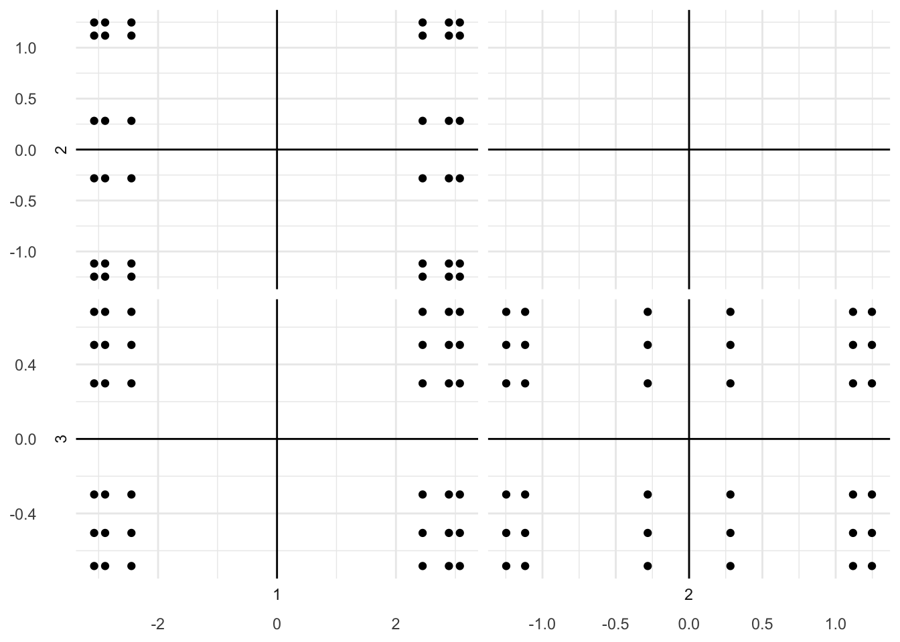
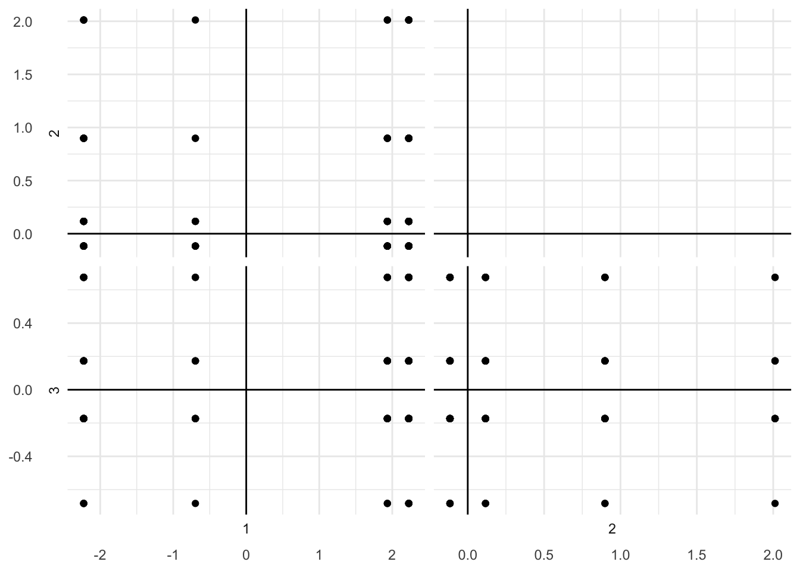

Chapter 3 Principal Component Analysis (PCA)
3.1 Description
3.1.1 What is PCA?
Principal component analysis (PCA) is used to analyze one table of quantitative data. PCA creates new variables, which are called principal components (or factors, or latent variables) from the input variables. The first principal component is the best fit of line that explains the most amount of variability across all of the variables. Subsequent components are defined as orthogonal to previous components, and explains the next most amount of variability across all of the variables.
3.1.2 Singular Value Decomposition (SVD)
PCA creates these principal components using singular value decompisition (SVD). SVD is one of several decomposition methods (e.g., [insert other methods here]). SVD decomposes the data into three matrices (or maps).
SVD gives one map for the rows of the table called factor scores and one map for the columns of the table called loadings. These two maps are related because they both are described by the same principal components. The third map gives the error between each component’s predicted data point and the actual data point called singular values.
3.1.3 How to Interpret these Matrices?
However, these 2 maps project different kinds of information onto the components, and so they are interpreted differently.
Factor scores are the coordinates of the row observations. They are interpreted by the distances between them, and their distance from the origin.
Loadings describe the column variables. Loadings are interpreted by the angle between them, and their distance from the origin.
The distance from the origin is important in both maps, because squared distance from the mean is inertia (variance, information; see sum of squares as in ANOVA/regression). Because of the Pythagorean Theorem, the total information contributed by a data point (its squared distance to the origin) is also equal to the sum of its squared factor scores.
3.1.4 What are the Assumptions of PCA?
3.2 Example
3.2.1 Packages
3.2.2 Data Pre-Processing
3.2.3 Descriptive Statistics
## n mean median min max sd se skew kurtosis
## Oak_Type 6 1.5 1.5 1 2 0.55 0.22 0 -2.31
## E1_fruity 6 1.5 1.5 1 2 0.55 0.22 0 -2.31
## E1_Woody 6 2.0 2.0 1 3 0.89 0.37 0 -1.96
## E1_Coffee 6 1.5 1.5 1 2 0.55 0.22 0 -2.31
## E2_Red_fruit 6 1.5 1.5 1 2 0.55 0.22 0 -2.31
## E2_Roasted 6 1.5 1.5 1 2 0.55 0.22 0 -2.31
## E2_Vanillin 6 2.0 2.0 1 3 0.89 0.37 0 -1.96
## E2_Woody 6 1.5 1.5 1 2 0.55 0.22 0 -2.31
## E3_Fruity 6 1.5 1.5 1 2 0.55 0.22 0 -2.31
## E3_Butter 6 1.5 1.5 1 2 0.55 0.22 0 -2.31
## E3_Woody 6 1.5 1.5 1 2 0.55 0.22 0 -2.31## Oak_Type E1_fruity E1_Woody E1_Coffee E2_Red_fruit E2_Roasted E2_Vanillin
## Oak_Type 1.0000000 1.0000000 -0.8164966 -1.0000000 1.0000000 -1.0000000 -0.8164966
## E1_fruity 1.0000000 1.0000000 -0.8164966 -1.0000000 1.0000000 -1.0000000 -0.8164966
## E1_Woody -0.8164966 -0.8164966 1.0000000 0.8164966 -0.8164966 0.8164966 1.0000000
## E1_Coffee -1.0000000 -1.0000000 0.8164966 1.0000000 -1.0000000 1.0000000 0.8164966
## E2_Red_fruit 1.0000000 1.0000000 -0.8164966 -1.0000000 1.0000000 -1.0000000 -0.8164966
## E2_Roasted -1.0000000 -1.0000000 0.8164966 1.0000000 -1.0000000 1.0000000 0.8164966
## E2_Vanillin -0.8164966 -0.8164966 1.0000000 0.8164966 -0.8164966 0.8164966 1.0000000
## E2_Woody -1.0000000 -1.0000000 0.8164966 1.0000000 -1.0000000 1.0000000 0.8164966
## E3_Fruity 0.3333333 0.3333333 0.0000000 -0.3333333 0.3333333 -0.3333333 0.0000000
## E3_Butter -1.0000000 -1.0000000 0.8164966 1.0000000 -1.0000000 1.0000000 0.8164966
## E3_Woody -1.0000000 -1.0000000 0.8164966 1.0000000 -1.0000000 1.0000000 0.8164966
## E2_Woody E3_Fruity E3_Butter E3_Woody
## Oak_Type -1.0000000 0.3333333 -1.0000000 -1.0000000
## E1_fruity -1.0000000 0.3333333 -1.0000000 -1.0000000
## E1_Woody 0.8164966 0.0000000 0.8164966 0.8164966
## E1_Coffee 1.0000000 -0.3333333 1.0000000 1.0000000
## E2_Red_fruit -1.0000000 0.3333333 -1.0000000 -1.0000000
## E2_Roasted 1.0000000 -0.3333333 1.0000000 1.0000000
## E2_Vanillin 0.8164966 0.0000000 0.8164966 0.8164966
## E2_Woody 1.0000000 -0.3333333 1.0000000 1.0000000
## E3_Fruity -0.3333333 1.0000000 -0.3333333 -0.3333333
## E3_Butter 1.0000000 -0.3333333 1.0000000 1.0000000
## E3_Woody 1.0000000 -0.3333333 1.0000000 1.00000003.2.4 Analysis
To perform PCA, we can use the epPCA() function.
## **Results for Principal Component Analysis**
## The analysis was performed on 6 individuals, described by 11 variables
## *The results are available in the following objects:
##
## name description
## 1 "$fi" "Factor scores of the rows"
## 2 "$di" "Squared distances of the rows"
## 3 "$ci" "Contributions of the rows"
## 4 "$ri" "Cosines of the rows"
## 5 "$fj" "Factor scores of the columns"
## 6 "$dj" "square distances of the columns"
## 7 "$cj" "Contributions for the columns"
## 8 "$rj" "Cosines of the columns"
## 9 "$t" "Explained Variance"
## 10 "$eigs" "Eigenvalues"
## 11 "$pdq" "SVD data"
## 12 "$X" "X matrix to decompose"
## 13 "$M" "Masses - each set to 1"
## 14 "$W" "Weights - each set to 1"
## 15 "$center" "Center of X"
## 16 "$scale" "Scale factor of X"3.2.6 Visualize and Interpret Components
3.2.6.1 Factor Scores
## Warning: `cols` is now required.
## Please use `cols = c(y)`## Warning: `cols` is now required.
## Please use `cols = c(data_x)`## Warning: `cols` is now required.
## Please use `cols = c(data_y)`
3.2.6.2 Loadings
## Warning: `cols` is now required.
## Please use `cols = c(y)`## Warning: `cols` is now required.
## Please use `cols = c(data_x)`## Warning: `cols` is now required.
## Please use `cols = c(data_y)`
3.3 Behind-the-Scenes
The single table is first decomposed using the svd() function.
3.3.1 SVD
3.3.2 SVD Results
The decomposition of the single table using SVD results in the three matrices:
- Singular values
- Left Singular
- Right Singular
3.3.2.1 Singular Values
## [1] 1.320000e+01 3.767286e+00 1.365628e+00 8.381807e-01 1.358330e-15 4.050210e-163.3.2.2 Left Singular
## [,1] [,2] [,3] [,4] [,5] [,6]
## [1,] -0.4968909 0.3350115 0.38368361 0.4004002 0.5674679 0.1063651
## [2,] -0.3876599 -0.3954209 0.54332009 -0.2546214 -0.3758488 0.4382591
## [3,] -0.3283876 -0.5315756 -0.07031995 0.5208750 -0.1916191 -0.5446241
## [4,] -0.3075753 -0.4628432 -0.43965138 -0.4056438 0.5674679 0.1063651
## [5,] -0.4760786 0.4037439 0.01435218 -0.5261186 -0.1916191 -0.5446241
## [6,] -0.4168063 0.2675892 -0.59928786 0.2493778 -0.3758488 0.43825913.3.2.3 Right Singular
## [,1] [,2] [,3] [,4] [,5] [,6]
## [1,] -0.2603803 -0.4707195 -0.09852947 -0.1850688 8.077925e-01 -8.867369e-02
## [2,] -0.2603803 -0.4707195 -0.09852947 -0.1850688 -3.484510e-01 6.200100e-01
## [3,] -0.3911972 0.2564668 0.41900188 -0.3250030 -4.828355e-02 -4.019953e-01
## [4,] -0.2881192 0.1653311 -0.27031923 0.1287652 -9.119654e-02 -4.200740e-02
## [5,] -0.2603803 -0.4707195 -0.09852947 -0.1850688 -4.593415e-01 -5.313363e-01
## [6,] -0.2881192 0.1653311 -0.27031923 0.1287652 2.279914e-02 1.050185e-02
## [7,] -0.3911972 0.2564668 0.41900188 -0.3250030 4.828355e-02 4.019953e-01
## [8,] -0.2881192 0.1653311 -0.27031923 0.1287652 2.279914e-02 1.050185e-02
## [9,] -0.2747224 -0.2589345 0.50436917 0.7765901 -3.046352e-15 2.791460e-16
## [10,] -0.2881192 0.1653311 -0.27031923 0.1287652 2.279914e-02 1.050185e-02
## [11,] -0.2881192 0.1653311 -0.27031923 0.1287652 2.279914e-02 1.050185e-02